Hands-on Building Graphs with OntoWeaver, BioCypher and Neo4j
Overview
This tutorial will help you get started with OntoWeaver as a replacement for an adapter in BioCypher, thus creating knowledge graphs automatically. You will learn how to use OntoWevaer to create a simple knowledge graph with a synthetic dataset that contains information about proteins and its interactions.
By the end of this tutorial, you will be able to:
- Set up OntoWeaver for a basic project.
- Explore a synthetic dataset and how to obtain a graph model from it.
- Build a small knowledge graph from the data.
- View and query the graph using Neo4j.
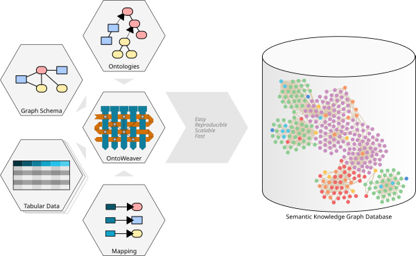
The workflow in this tutorial is:
flowchart TD
A["CSV/TSV data"] --> B["YAML mapping"]
B --> C["OntoWeaver"]
C --> D["BioCypher offline files"]
D --> E["Neo4j"]
A:::data
B:::config
C:::tool
D:::output
E:::database
classDef data fill:#E3F2FD,stroke:#1565C0,stroke-width:2px,color:#0D47A1;
classDef config fill:#FFF3E0,stroke:#EF6C00,stroke-width:2px,color:#E65100;
classDef tool fill:#E8F5E9,stroke:#2E7D32,stroke-width:2px,color:#1B5E20;
classDef output fill:#F3E5F5,stroke:#7B1FA2,stroke-width:2px,color:#4A148C;
classDef database fill:#ECEFF1,stroke:#37474F,stroke-width:2px,color:#263238;Pre-requisites
Note: Ensure you have the following prerequisites before continue with the tutorial.
| Tool | Version/Requirement | Installation Link | Notes |
|---|---|---|---|
| Git | Any | Git Docs | For version control |
| Neo4j | >=1.6 | Neo4j Desktop | For querying graphs |
| uv | >=0.7.x | uv Docs | For dependency management |
| Python | >= 3.11 | Python.org | Required for BioCypher |
| Jupyter (optional) | Any | Jupter | Required for exploring the sample data |
Setup
Setup Python project
In this section, you will set up your working environment.
-
Create a folder that will become your repository for our OntoWeaver adapter with the correct folder structure:
Here, the folderconfigwill contain all the configuration (schema) files, while the folderdata/inwill contain the tabular data that will be converted into a semantic knowledge graph. -
Install the dependencies using your preferred package manager (e.g. uv, Poetry or pip):
You should always first create a dedicated Python environment for your project, and then install the dependencies into the environment. Environments can be managed by conda, uv, poetry or venv, for example.
After you have created your environment, activate the environment and install the required packages using your preferred package manager.
Using uv: (recommended)
Using pip:
You also need to install Jupyter into your environment, i.e.
pip install jupyter, if later you want to explore the sample data in a Jupyter notebook. -
Test the OntoWeaver installation:
You can test if OntoWeaver is installed correctly by calling the CLI with:
if you are using uv, or for a pip installation.
Setup Neo4j
Note:
In this section, we will create a Neo4j instance to use later in the tutorial. It is important to set this up now.
-
Execute Neo4j Desktop, if this the first time you should see a window like this one.
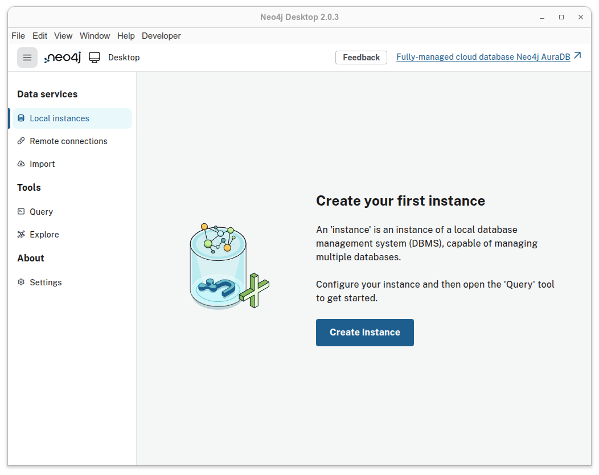
Figure 1. Neo4j Desktop start screen. -
Create a new instance in Neo4j. For this tutorial, name it
neo4j-tutorial-instanceand choose a password you can remember.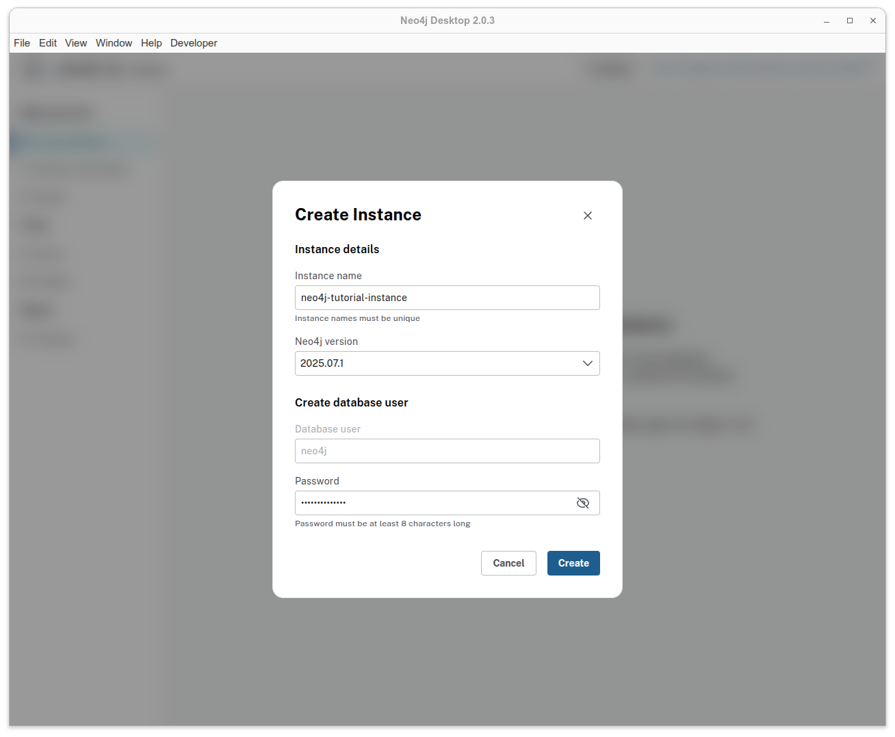
Figure 2. Create Instance window. This may vary depending on your Neo4j version. -
Access details in the option Overview.

Figure 3. Overview option to check details related to your Neo4j instance. -
Save the path to your Neo4j instance, we are going to use this path later in this tutorial.
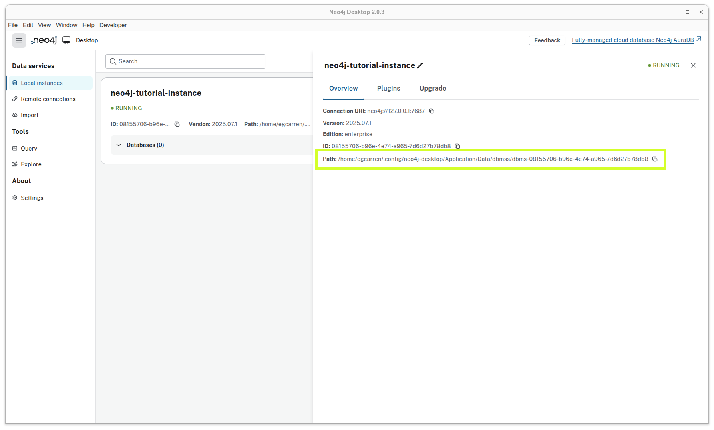
Figure 4. Neo4j instance with its path location highlighted.
Section 1. Exploratory Data Analysis
For this tutorial we are going to use a synthetic dataset that contains information about the interaction between proteins. The dataset is contained in a tsv file, similar to a csv file but using tabs instead of commas as delimiters.
-
First, download the dataset:
-
Create a folder called
notebooks -
Create and run either a Python file or a Jupyter notebook containing the following code.
File:
notebooks/eda_synthetic_data.pyimport pandas as pd # Load the dataset df = pd.read_table('../data/in/synthetic_protein_interactions.tsv', sep='\t') # Show the first few rows print("\n---- First 10 rows in the dataset") print(df.head(10)) # List the columns in the dataset print("\n---- Columns in the dataset") for column in df.columns: print(f"\t{column}") # Get basic info about the datasets print("\n---- Summary Dataframe") print(df.info()) # Check for missing values print("\n---- Check missing values") print(df.isnull().sum()) # Show summary statistics for numeric columns print("\n---- Describe Dataframe statistics") print(df.describe()) # Count the unique number of proteins in each column print("\n---- Number of unique proteins per column.") print('Unique proteins in column protein_a:', df['source'].nunique()) print('Unique proteins in column protein_b:', df['target'].nunique())
📝 Exercise:
a. How many unique proteins do we have in the dataset? Hint: count unique proteins in the source and target columns.
b. How many interactions exist in our dataset? Hint: count unique interactions between sources and targets.
c. Some columns contain boolean values represented as "1" and "0". Can you detect which ones?
Answer:
a. Number of unique proteins: 15.
b. Number of unique interactions: there are 22 unique interactions. One interaction is repeated, with a difference in one of its properties.
c. is_directed, is_stimulation, is_inhibition, consensus_direction, consensus_stimulation,consensus_inhibition.
Section 2. Graph Modeling
Graph Modeling
By looking at the tsv file, we can see that there are two columns called source and target, which represent proteins. This means that each row represents an interaction between a source protein and a target protein. For now, our graph could look like this.
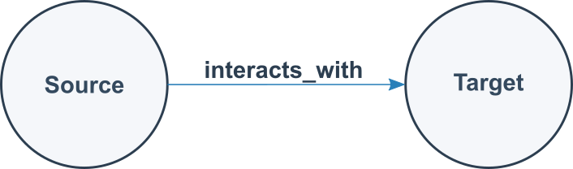
Can we improve the graph? Absolutely! Understanding the data is essential for building an effective graph. By examining the other columns in the table, we can identify additional details:
-
The
sourceandtargetcolumns represent nodes in the graph, with each node corresponding to a protein. -
Each protein listed in the
sourcecolumn has associated properties found in other columns:source_genesymbol: the gene symbol of the source protein.ncbi_tax_id_source: the NCBI taxonomy identifier of the source protein.entity_type_source: the type of entity for the source protein.
-
Each protein in the
targetcolumn has associated properties found in other columns:target_genesymbolncbi_tax_id_targetentity_type_target
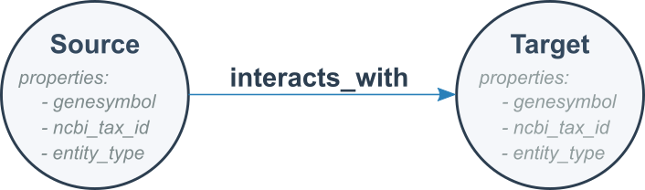
We know that a source protein interacts with a target protein, but do we know how?
Remaining columns in the table describe properties of these protein-protein interactions:
Interaction properties
is_directedis_stimulationis_inhibitionconsensus directionconsensus stimulationconsensus inhibitiontype
It is these protein-protein interactions that form the edges in the graph. Here, is_directed, is_stimulation, and is_inhibition describe properties that characterize each interaction type, while consensus direction, consensus stimulation, and consensus inhibition indicate the aggregated or consensus value derived from multiple sources in OmniPath for each property.
We are ready to model our second version of our graph. It is like follows:

Finally, we can model a more detailed graph using our dataset. Rather than representing all interactions in a generic way, we can use the type field to show the specific type of interaction occurring between each pair of proteins.
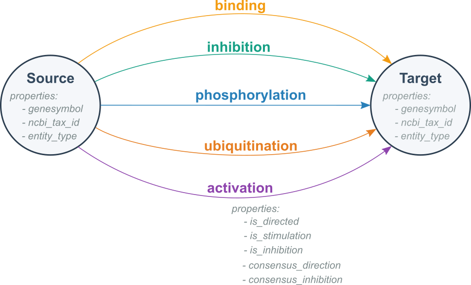
Exercise 1. Example of a graph we expect with our data
📝 Exercise: Sketch a portion of the knowledge graph using the provided dataset.
Answer:
If you include all the nodes and edges from your TSV file, your sketch should look like the following example:
graph LR
SOD1((SOD1)) -- binding --> EGFR((EGFR))
CDK1((CDK1)) -- activation --> TP53((TP53))
MYC((MYC)) -- phosporylation --> GAPDH((GAPDH))
MTOR((MTOR)) -- ubiquitination --> NFKB1((NFKB1))
NFKB1((NFKB1)) -- activation --> CDK1((CDK1))
MAPK1((MAPK1)) -- ubiquitination --> HSP90((HSP90))
TP53((TP53)) -- ubiquitination --> CREB1((CREB1))
HSP90((HSP90)) -- activation --> APP((APP))
HSP90((HSP90)) -- ubiquitination --> RHOA((RHOA))
SOD1((SOD1)) -- inhibition --> TP53((TP53))
AKT1((AKT1)) -- ubiquitination --> HSP90((HSP90))
HSP90((HSP90)) -- ubiquitination --> MYC((MYC))
MAPK1((MAPK1)) -- ubiquitination --> BRCA1((BRCA1))
NFKB1((NFKB1)) -- inhibition --> RHOA((RHOA))
NFKB1((NFKB1)) -- phosphorylation --> APP((APP))
HSP90((HSP90)) -- binding --> GAPDH((GAPDH))
GAPDH((GAPDH)) -- activation --> TP53((TP53))
AKT1((AKT1)) -- phosphorylation --> TP53((TP53))
GAPDH((GAPDH)) -- activation --> APP((APP))
TP53((TP53)) -- activation --> MAPK1((MAPK1))
TP53((TP53)) -- ubiquitination --> CREB1((CREB1))
MYC((MYC)) -- phosphorylation --> GAPDH((GAPDH))
EGFR((EGFR)) -- binding --> SOD1((SOD1))Section 3. Graph creation with OntoWeaver
We aim to create a knowledge graph using the data we found in the tsv file. Let's recap our exercise:
-
Create a graph with the following characteristics:
- One node type:
Protein. - Five edge types:
activation,binding,inhibition,phosphorylation,ubiquitination.
- One node type:
-
Each node has properties:
- genesymbol
- ncbi_tax_id
- entity_type
-
Each edge has properties:
- is_directed
- is_stimulation
- is_inhibition
- consensus_direction
- consensus_stimulation
- consensus_inhibition
-
We must export the knowledge graph to Neo4j.
To achieve this, we can divide the process into three sections:
-
- Map the columns to types in the ontology
- Process data
- Stream processed data
Step 1. Configuration
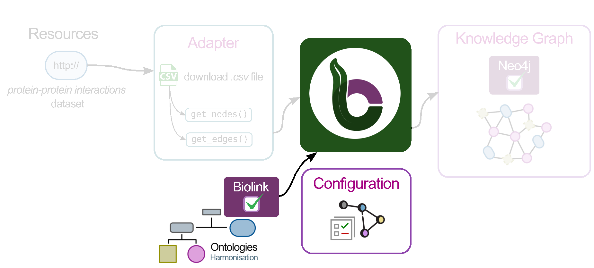
Create a schema for your graph
Rationale: the schema file allows us to define the skeleton for our knowledge graph. Nodes, edges, properties are defined here.
The following is an example of how our schema file should look like, all of this is based on how we defined the graph structure (nodes, edges and their properties).
File: config/schema_config.yaml
#-------------------------------------------------------------------
#------------------------- NODES -------------------------
#-------------------------------------------------------------------
#========= PARENT NODES
protein:
represented_as: node
preferred_id: uniprot
input_label: uniprot_protein
#-------------------------------------------------------------------
#------------------ RELATIONSHIPS (EDGES) -----------------
#-------------------------------------------------------------------
#========= PARENT EDGES
protein protein interaction:
is_a: pairwise molecular interaction
represented_as: edge
input_label: protein_protein_interaction
properties:
is_directed: bool
is_stimulation: bool
is_inhibition: bool
consensus_direction: bool
consensus_stimulation: bool
consensus_inhibition: bool
#========= INHERITED EDGES
binding:
is_a: protein protein interaction
inherit_properties: true
represented_as: edge
input_label: binding
# ...rest of schema_config.yaml omitted for brevity...
Nodes
The protein top-level key in the YAML snippet identifies our entity and connects it to the ontological backbone.
| Key | Value | Description |
|---|---|---|
represented_as |
node |
Specifies how BioCypher should represent each entity in the graph; in this case, as a node. |
preferred_id |
uniprot |
Defines a namespace for our proteins. In this example, all proteins follow the UniProt convention—a 5-character alphanumeric string (e.g., P00533). |
input_label |
uniprot_protein |
Indicates the expected label in the node tuple. All other input nodes without this label are ignored unless they are defined in the schema configuration. |
For more information about which other keywords you can use to configure your nodes in the schema file consult Fields reference.
Edges (relationships)
As shown in Figure 7, each edge has the same set of properties (is_directed, consensus_direction, etc.). At this stage, we have two options for defining the edges:
- Option 1: Create each edge and explicitly define the same set of property fields for every edge.
File: config/schema_config.yaml
#-------------------------------------------------------------------
#------------------ RELATIONSHIPS (EDGES) -----------------
#-------------------------------------------------------------------
activation:
is_a: pairwise molecular interaction
represented_as: edge
input_label: protein_protein_interaction
properties:
is_directed: bool
is_stimulation: bool
is_inhibition: bool
consensus_direction: bool
consensus_stimulation: bool
consensus_inhibition: bool
binding:
is_a: pairwise molecular interaction
represented_as: edge
input_label: protein_protein_interaction
properties:
is_directed: bool
is_stimulation: bool
is_inhibition: bool
consensus_direction: bool
consensus_stimulation: bool
consensus_inhibition: bool
# ...rest of schema_config.yaml omitted for brevity...
- Option 2 (recommended): Create a base edge with the properties, and then create edges that inherit the behavior of this base edge. This approach reduces lines of code and avoids repetition. For example, if you have more than 20 edges, Option 1 would likely not be practical.
File: config/schema_config.yaml
#-------------------------------------------------------------------
#------------------ RELATIONSHIPS (EDGES) -----------------
#-------------------------------------------------------------------uniprot
#==== BASE EDGE or PARENT EDGE
protein protein interaction:
is_a: pairwise molecular interaction
represented_as: edge
input_label: protein_protein_interaction
properties:
is_directed: bool
is_stimulation: bool
is_inhibition: bool
consensus_direction: bool
consensus_stimulation: bool
consensus_inhibition: bool
#==== INHERITED EDGES
activation:
is_a: protein protein interaction
inherit_properties: true
represented_as: edge
input_label: activation
binding:
is_a: protein protein interaction
inherit_properties: true
represented_as: edge
input_label: binding
# ...rest of schema_config.yaml omitted for brevity...
Let's explain the keys and values for the second case (Option 2), because we are going to use the second option approach.
Base Edge
The protein protein interaction top-level key in the YAML snippet identifies our edge entity.
| Key | Value | Description |
|---|---|---|
is_a |
pairwise molecular interaction |
Defines the type of entity based on the ontology. |
represented_as |
edge |
Explicitly specifies that this entity is an edge. |
input_label |
protein_protein_interaction |
Defines a namespace for our relationships. |
properties |
property: datatype (i.e. is_directed: bool) |
Contains all properties associated with this edge; each property has a name and an associated datatype. |
Inherited Edges
The activation: top-level key in the YAML snippet identifies our edge entity.
| Key | Value | Description |
|---|---|---|
is_a |
protein protein interaction |
Defines the type of entity; in this case, it is a child of the base edge we defined previously. |
inherit_properties |
true |
Indicates whether all propertuniproties defined in the base edge should be inherited. |
represented_as |
edge |
Specifies that BioCypher will treat this entity (activation) as an edge. |
input_label |
binding |
Specifies the expected edge label; edges without this label are ignored unless defined in the schema. |
A comment about the connection between BioCypher and Ontologies
In BioCypher, ontologies are integrated through the schema configuration file. This YAML file defines the structure of the graph by specifying which entities and relationships should be included. At the same time, it links those entities to the biomedical domain by aligning them with an ontological hierarchy. In this tutorial, we use the Biolink Model as the backbone of that hierarchy. The guiding principle is simple: only entities that are defined in the schema configuration and present in the input data are incorporated into the final knowledge graph.
Figure 10 illustrates the Biolink Model and some of its components organized in a hierarchy. Notice that entities such as protein (nodes) and pairwise molecular interaction (edges) appear both in the schema configuration and in the ontology. This alignment ensures that BioCypher graphs are not only structured consistently but also grounded in standardized biomedical concepts. For a deeper exploration of ontologies in BioCypher, see our ontology tutorial.

📝 Exercise: Revise and complete the
schema_config.yamlfile, and make sure it is located in theconfigfolder.
Answer:
See the example below for a completed schema_config.yaml.
File: config/schema_config.yaml
#-------------------------------------------------------------------
#------------------------- NODES -------------------------
#-------------------------------------------------------------------
#==== PARENT NODES
protein:
represented_as: node
preferred_id: uniprot
input_label: protein
#==== INHERITED NODES
protein_source:
is_a: protein
represented_as: node
preferred_id: uniprot
input_label: protein_source
protein_target:
is_a: protein
represented_as: node
preferred_id: uniprot
input_label: protein_target
#-------------------------------------------------------------------
#------------------ RELATIONSHIPS (EDGES) -----------------
#-------------------------------------------------------------------
#==== PARENT EDGES
protein protein interaction:
is_a: pairwise molecular interaction
represented_as: edge
input_label: protein_protein_interaction
properties:
is_directed: bool
is_stimulation: bool
is_inhibition: bool
consensus_direction: bool
consensus_stimulation: bool
consensus_inhibition: bool
#==== INHERITED EDGES
activation:
is_a: protein protein interaction
inherit_properties: true
represented_as: edge
input_label: activation
binding:
is_a: protein protein interaction
inherit_properties: true
represented_as: edge
input_label: binding
inhibition:
is_a: protein protein interaction
inherit_properties: true
represented_as: edge
input_label: inhibition
phosphorylation:
is_a: protein protein interaction
inherit_properties: true
represented_as: edge
input_label: phosphorylation
ubiquitination:
is_a: protein protein interaction
inherit_properties: true
represented_as: edge
input_label: ubiquitination
Configure BioCypher behavior
Rationale: The purpose of writing a biocypher_config.yaml is to define how BioCypher should operate for your project—specifying settings for data import, graph creation, and database interaction—all in one place for clarity and easy customization.
File: config/biocypher_config.yaml
#---------------------------------------------------------------
#-------- BIOCYPHER GENERAL CONFIGURATION --------
#---------------------------------------------------------------
biocypher:
offline: true
debug: false
schema_config_path: config/schema_config.yaml
cache_directory: .cache
# Ontology configuration
head_ontology:
url: https://github.com/biolink/biolink-model/raw/v3.2.1/biolink-model.owl.ttl
root_node: entity
#----------------------------------------------------
#-------- OUTPUT CONFIGURATION --------
#----------------------------------------------------
neo4j:
database_name: neo4j
delimiter: '\t'
array_delimiter: '|'
skip_duplicate_nodes: true
skip_bad_relationships: true
import_call_bin_prefix: <path to your Neo4j instance from Setup Neo4j section>/bin/
The first block is the BioCypher Core Settings, which starts with biocypher:
| key | value | description |
|---|---|---|
offline |
true |
Whether to run in offline mode (no running DBMS or in-memory object) |
debug |
false |
Whether to enable debug logging |
schema_config_path |
config/schema_config.yaml |
Path to the schema configuration file |
cache_directory |
.cache |
Path to the schema configuration file |
head_ontology |
url, root_node |
Specification of the ontology to use, here: Biolink |
The second block is the Database Management System Settings, which starts with the name of the DBMS, in this case it's neo4j:
| key | value | description |
|---|---|---|
delimiter |
'\t' |
Field delimiter for TSV import files |
array_delimiter |
';' |
Delimiter for array values |
skip_duplicate_nodes |
true |
Whether to skip duplicate nodes during import |
skip_bad_relationships |
true |
Whether to skip relationships with missing endpoints |
import_call_bin_prefix |
i.e., /usr/bin/ |
Prefix for the import command binary (optional) |
The import_call_bin_prefix is the path to your Neo4j instance that you looked up in section Setup Neo4j together with the prefix /bin.
The default configuration that comes with BioCypher and more configuration parameters for the Settings are listed in BioCypher Configuration Reference.
📝 Exercise: Revise and complete the
biocypher_config.yamlfile, and make sure it is located in theconfigfolder.
Answer:
See the example below for a completed biocypher_config.yaml. Note, the path in the import_call_bin_prefix correspond to my personal instance, you MUST update this path with yours, do not forget to add /bin/ as in my example
File: biocypher_config.yaml
#---------------------------------------------------------------
#-------- BIOCYPHER GENERAL CONFIGURATION --------
#---------------------------------------------------------------
biocypher:
offline: true
debug: false
schema_config_path: config/schema_config.yaml
cache_directory: .cache
# Ontology configuration
head_ontology:
url: https://github.com/biolink/biolink-model/raw/v3.2.1/biolink-model.owl.ttl
root_node: entity# Map a column to an edge.
#----------------------------------------------------
#-------- OUTPUT CONFIGURATION --------
#----------------------------------------------------
neo4j:
database_name: neo4j
delimiter: '\t'
array_delimiter: '|'
skip_duplicate_nodes: true
skip_bad_relationships: true
import_call_bin_prefix: /home/egcarren/.config/neo4j-desktop/Application/Data/dbmss/dbms-08155706-b96e-4e74-a965-7d6d27b78db8/bin/
Step 2. Create the mapping
Rationale: The purpose of creating a mapping is to define how OntoWeaver should prepare the data for the knowledge graph creation with OntoWeaver.
In the Python UI track, the knowledge graph is created from the relational data using an adapter, that is, Python code. OntoWeaver offers a pathway to sidestepping this adapter by using a mapping. The mapping indicates what column of the table shall map on which type of the ontology.
We need to create a mapping file in the config folder, that contains information like
File: config/protein_interactions_mapping.yaml
row: # The meaning of an entry in the input table.
map:
column: source
to_subject: protein
transformers: # How to map cells to nodes and edges.
- map: # Map a column to a node.
column: target
to_object: protein
via_relation: protein protein interaction
- map: # Map a column to an edge.
column: is_directed
to_property: is_directed
for_object: protein protein interaction
- map: # Map a column to an edge.
column: is_stimulation
to_property: is_stimulation
for_object: protein protein interaction
metadata: # Optional properties added to every node and edge.
- source: "Synthetic protein interaction dataset"
- version: "tutorial-example-ontoweaver"
The first block is maps the rows and starts with row: This mapping explains the meaning of each row in the input table. In this case, each row of the column source in the tabular data is mapped to protein.
The section transformers then links the other nodes to it using the described transformations.
Consult the full mapping reference for more information.
Mapping structure explanation
row: # The meaning of an entry in the input table.
map:
column: <column name in your CSV>
to_subject: <ontology node type to use for representing a row>
transformers: # How to map cells to nodes and edges.
- map: # Map a column to a node.
column: <column name>
to_object: <ontology node type to use for representing a column>
via_relation: <edge type for linking subject and object nodes>
- map: # Map a column to a property.
column: <another name>
to_property: <property name>
for_object: <type holding the property>
metadata: # Optional properties added to every node and edge.
- source: "My OntoWeaver adapter"
- version: "v1.2.3"
📝 Exercise: Revise and complete the
protein_interactions_mapping.yamlfile, and make sure it is located in theconfigfolder.
Answer:
See the example below for a completed protein_interactions_mapping.yaml.
File: protein_interactions_mapping.yaml
row: # The meaning of an entry in the input table.
map:
column: source
to_subject: protein_source
final_type: protein
transformers: # How to map cells to nodes and edges.
- map: # Map a column to a node.
column: target
match_type_from_column: type
match:
- (?i)^activation$:
to_object: protein_target
final_type: protein
via_relation: activation
- (?i)^binding$:
to_object: protein_target
final_type: protein
via_relation: binding
- (?i)^inhibition$:
to_object: protein_target
final_type: protein
via_relation: inhibition
- (?i)^phosphorylation$:
to_object: protein_target
final_type: protein
via_relation: phosphorylation
- (?i)^ubiquitination$:
to_object: protein_target
final_type: protein
via_relation: ubiquitination
- ^.*$:
to_object: protein_target
final_type: protein
via_relation: protein_protein_interaction
- map: # Map a column to an edge.
column: is_directed
to_property: is_directed
for_object:
- protein_protein_interaction
- activation
- binding
- inhibition
- phosphorylation
- ubiquitination
- map:
column: is_stimulation
to_property: is_stimulation
for_object:
- protein_protein_interaction
- activation
- binding
- inhibition
- phosphorylation
- ubiquitination
- map:
column: is_inhibition
to_property: is_inhibition
for_object:
- protein_protein_interaction
- activation
- binding
- inhibition
- phosphorylation
- ubiquitination
- map:
column: consensus_direction
to_property: consensus_direction
for_object:
- protein_protein_interaction
- activation
- binding
- inhibition
- phosphorylation
- ubiquitination
- map:
column: consensus_stimulation
to_property: consensus_stimulation
for_object:
- protein_protein_interaction
- activation
- binding
- inhibition
- phosphorylation
- ubiquitination
- map:
column: consensus_inhibition
to_property: consensus_inhibition
for_object:
- protein_protein_interaction
- activation
- binding
- inhibition
- phosphorylation
- ubiquitination
- map:
column: source_genesymbol
to_property: genesymbol
for_subject: protein_source
- map:
column: ncbi_tax_id_source
to_property: ncbi_tax_id
for_subject: protein_source
- map:
column: entity_type_source
to_property: entity_type
for_subject: protein_source
- map:
column: target_genesymbol
to_property: genesymbol
for_object: protein_target
- map:
column: ncbi_tax_id_target
to_property: ncbi_tax_id
for_object: protein_target
- map:
column: entity_type_target
to_property: entity_type
for_object: protein_target
metadata: # Optional properties added to every node and edge.
- source: "Synthetic protein interaction dataset"
- version: "tutorial-example"
Step 3. Create the knowledge graph by running OntoWeaver
Rationale: OntoWeaver will use the mapping and the ontology that are provided to create the required input for BioCypher, and run BioCypher.
Run Ontoweaver with the following command:
ontoweave \
--biocypher-config config/biocypher_config.yaml \
--biocypher-schema config/schema_config.yaml \
data/in/synthetic_protein_interactions.tsv:config/protein_interactions_mapping.yaml
INFO -- This is BioCypher v0.15.0.
INFO -- Logging into `biocypher-log/biocypher-20260603-091220.log`.
WARNING:ontoweaver:Skip output validation for columns: `target`. This could result in some empty or `nan` nodes. To enable output validation set `validate_output` to `True`.
WARNING -- Neo4j supports only edge_labels_order: 'Leaves', I'll set it for you, but you should fix your configuration file in the `neo4j` section.
WARNING:biocypher:Neo4j supports only edge_labels_order: 'Leaves', I'll set it for you, but you should fix your configuration file in the `neo4j` section.
/home/inga/projects/biocypher/adapters/ontoweaver-adapter/biocypher-out/20260603091221/neo4j-admin-import-call.sh
Section 4. Interacting with your graph using Neo4j
Load the graph using an import script
When you create the knowledge graph with OntoWeaver and it completes successfully, it generates several CSV files and an import script to load the graph data into Neo4j.
a. Look for a folder whose name starts with biocypher-out. Each time you run the script, a new folder is created inside biocypher-out with a timestamp. Inside this folder, you should see the following:
🟨 CSV files associated to nodes.
🟦 CSV files associated to edges.
🟥 admin import script
/biocypher-out
└── 20250818153026
├── 🟦 ProteinProteinInteraction-header.csv
├── 🟦 ProteinProteinInteraction-part000.csv
├── 🟥 neo4j-admin-import-call.sh
├── 🟨 Protein-header.csv
├── 🟨 Protein-part000.csv
b. Stop the neo4j instance. You can do this on the GUI or in terminal. In terminal, you must locate the neo4j executable in the Neo4j instance path.
c. Run the neo4j-admin-import-call.sh script in your biocypher-output/. If needed, install and activate Java 21 before running (TODO verify this is required on Windows)**:
Neo4j Java version
Recent Neo4j versions may require Java 21 or newer for offline imports.
Check your Java version:
d. If everything has been successfully, you should see in terminal something similar to this:
Terminal output:
Neo4j detected version: 2026
Starting to import, the following output will be saved in the directory: /home/inga/neo4j_data/Application/Data/dbmss/dbms-00aec91a-7031-49e0-b119-efb693863648/logs/neo4j-admin-import-2026-06-03.08.47.52
Logging information: import.log
Detailed progress reporting (JSON formatted): progress.json.log
Import data errors / violations (JSON formatted): report.json.log
NOTE this directory will be cleared on the completion of a successful import.
Neo4j version: 2026.04.0
Importing the contents of these files into /home/inga/neo4j_data/Application/Data/dbmss/dbms-00aec91a-7031-49e0-b119-efb693863648/data/databases/neo4j:
Nodes:
/home/inga/projects/biocypher/adapters/ontoweaver-adapter/biocypher-out/20260603084611/Protein-header.csv
/home/inga/projects/biocypher/adapters/ontoweaver-adapter/biocypher-out/20260603084611/Protein-part000.csv
Relationships:
null:
/home/inga/projects/biocypher/adapters/ontoweaver-adapter/biocypher-out/20260603084611/ProteinProteinInteraction-header.csv
/home/inga/projects/biocypher/adapters/ontoweaver-adapter/biocypher-out/20260603084611/ProteinProteinInteraction-part000.csv
Available resources:
Total machine memory: 30.33GiB
Free machine memory: 15.70GiB
Max heap memory : 910.5MiB
Max worker threads: 16
Configured max memory: 13.42GiB
High parallel IO: true
Import starting
Page cache size: 1.992GiB
Number of worker threads: 16
Estimated number of nodes: 15
Estimated number of relationships: 21
Importing nodes
.......... .......... .......... .......... .......... 5% ∆87ms [87ms]
.......... .......... .......... .......... .......... 10% ∆0ms [88ms]
.......... .......... .......... .......... .......... 15% ∆0ms [88ms]
.......... .......... .......... .......... .......... 20% ∆0ms [88ms]
.......... .......... .......... .......... .......... 25% ∆0ms [88ms]
.......... .......... .......... .......... .......... 30% ∆0ms [88ms]
.......... .......... .......... .......... .......... 35% ∆0ms [88ms]
.......... .......... .......... .......... .......... 40% ∆0ms [89ms]
.......... .......... .......... .......... .......... 45% ∆0ms [89ms]
.......... .......... .......... .......... .......... 50% ∆0ms [89ms]
.......... .......... .......... .......... .......... 55% ∆0ms [89ms]
.......... .......... .......... .......... .......... 60% ∆0ms [89ms]
.......... .......... .......... .......... .......... 65% ∆0ms [89ms]
.......... .......... .......... .......... .......... 70% ∆0ms [89ms]
.......... .......... .......... .......... .......... 75% ∆0ms [89ms]
.......... .......... .......... .......... .......... 80% ∆0ms [89ms]
.......... .......... .......... .......... .......... 85% ∆0ms [89ms]
.......... .......... .......... .......... .......... 90% ∆0ms [89ms]
.......... .......... .......... .......... .......... 95% ∆0ms [89ms]
.......... .......... .......... .......... .......... 100% ∆0ms [89ms]
Prepare ID mapper
.......... .......... .......... .......... .......... 5% ∆51ms [51ms]
.......... .......... .......... .......... .......... 10% ∆0ms [51ms]
.......... .......... .......... .......... .......... 15% ∆0ms [52ms]
.......... .......... .......... .......... .......... 20% ∆0ms [52ms]
.......... .......... .......... .......... .......... 25% ∆0ms [52ms]
.......... .......... .......... .......... .......... 30% ∆0ms [52ms]
.......... .......... .......... .......... .......... 35% ∆6ms [59ms]
.......... .......... .......... .......... .......... 40% ∆0ms [59ms]
.......... .......... .......... .......... .......... 45% ∆0ms [59ms]
.......... .......... .......... .......... .......... 50% ∆0ms [59ms]
.......... .......... .......... .......... .......... 55% ∆0ms [60ms]
.......... .......... .......... .......... .......... 60% ∆0ms [60ms]
.......... .......... .......... .......... .......... 65% ∆0ms [60ms]
.......... .......... .......... .......... .......... 70% ∆0ms [60ms]
.......... .......... .......... .......... .......... 75% ∆0ms [60ms]
.......... .......... .......... .......... .......... 80% ∆0ms [60ms]
.......... .......... .......... .......... .......... 85% ∆0ms [60ms]
.......... .......... .......... .......... .......... 90% ∆0ms [60ms]
.......... .......... .......... .......... .......... 95% ∆0ms [60ms]
.......... .......... .......... .......... .......... 100% ∆0ms [60ms]
Imported Stats[processed=15, created=15, updated=0, deleted=0] nodes in 199ms
using configuration:Configuration[numberOfWorkers=16, temporaryPath=/home/inga/neo4j_data/Application/Data/dbmss/dbms-00aec91a-7031-49e0-b119-efb693863648/data/databases/neo4j/temp, applyBatchSize=64, sorterSizeSwitchFactor=0.35]
Importing relationships
.......... .......... .......... .......... .......... 5% ∆38ms [38ms]
.......... .......... .......... .......... .......... 10% ∆0ms [38ms]
.......... .......... .......... .......... .......... 15% ∆0ms [38ms]
.......... .......... .......... .......... .......... 20% ∆0ms [38ms]
.......... .......... .......... .......... .......... 25% ∆0ms [38ms]
.......... .......... .......... .......... .......... 30% ∆0ms [38ms]
.......... .......... .......... .......... .......... 35% ∆0ms [38ms]
.......... .......... .......... .......... .......... 40% ∆0ms [38ms]
.......... .......... .......... .......... .......... 45% ∆0ms [38ms]
.......... .......... .......... .......... .......... 50% ∆0ms [39ms]
.......... .......... .......... .......... .......... 55% ∆0ms [39ms]
.......... .......... .......... .......... .......... 60% ∆0ms [39ms]
.......... .......... .......... .......... .......... 65% ∆0ms [39ms]
.......... .......... .......... .......... .......... 70% ∆0ms [39ms]
.......... .......... .......... .......... .......... 75% ∆0ms [39ms]
.......... .......... .......... .......... .......... 80% ∆0ms [39ms]
.......... .......... .......... .......... .......... 85% ∆0ms [39ms]
.......... .......... .......... .......... .......... 90% ∆0ms [39ms]
.......... .......... .......... .......... .......... 95% ∆0ms [39ms]
.......... .......... .......... .......... .......... 100% ∆0ms [39ms]
Imported Stats[processed=21, created=21, updated=0, deleted=0] relationships in 105ms
Flushing stores
Flush completed in 48ms
IMPORT DONE in 1s 344ms.
Visualize the graph
a. Connect to your instance by running Neo4j desktop again. Select your instance and click on "Connect" - the little arrow on the button allows you to expand a menu. Select the option Query.

b. Now, click on the asterisk under the Relationships category. You now should see your graph! Compare to the sketch you did previosly in this tutorial

Execute cypher queries
Try the following queries:
- Find relationships between two nodes Result:

- Find all the nodes
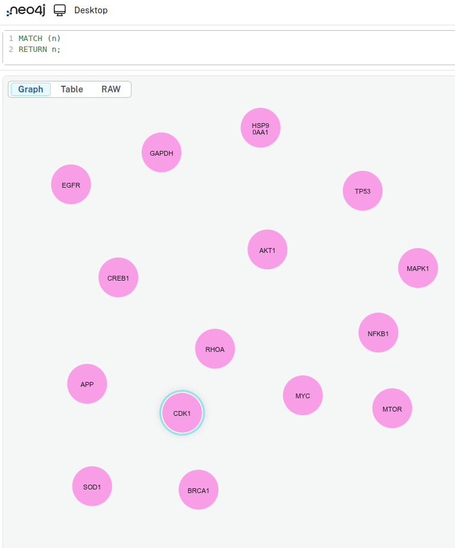
- Find all nodes of a specific type(e.g.
Proteinin the following query)

- Find all relationships of a specific type(e.g.
Bindingin the following query)
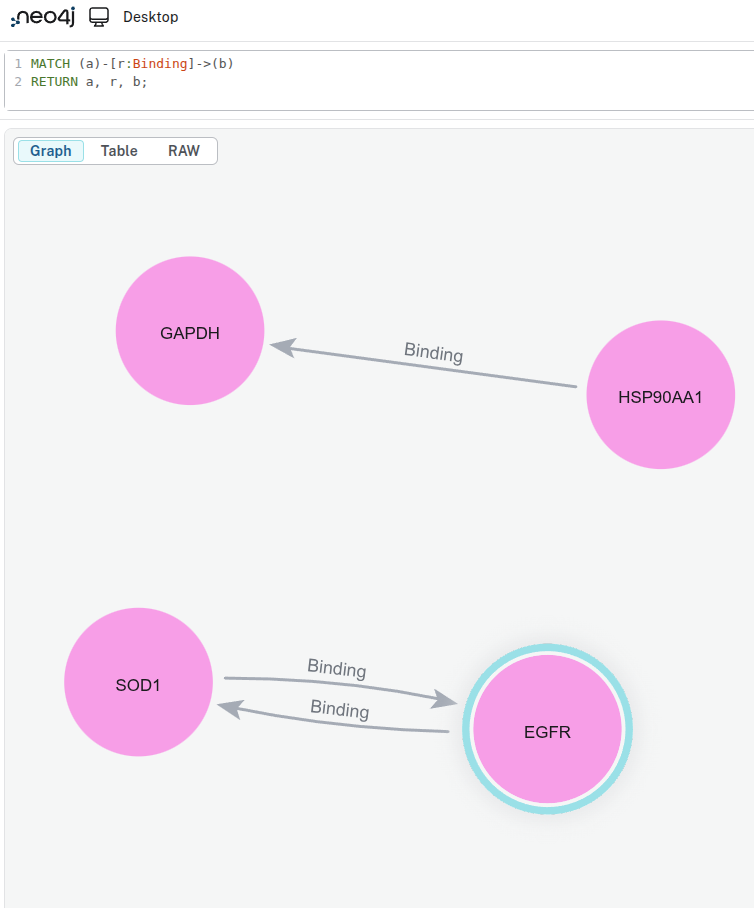
- Count relationships of a given type(e.g.
Bindingin the following query)
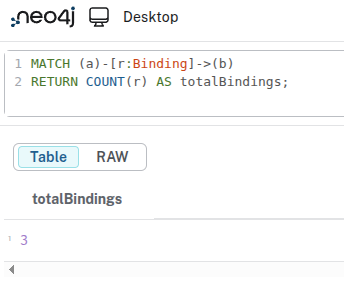
Next Steps
- Explore more advanced queries and graph analytics in Neo4j.
- Try integrating additional datasets or expanding your graph model. For guidance, see the Basics tutorial.
- Review the BioCypher documentation for deeper insights.
Feedback & Contributions
If you found this tutorial helpful or have suggestions for improvement, please open an issue or submit a pull request in the BioCypher repository. Specific feedback on examples, clarity of instructions, or missing details is especially appreciated.
| Last Update | Developed by | Affiliation |
|---|---|---|
| 2026.06.03 | Inga Ulusoy (GH @iulusoy) Yasamin Fazeli (GH @yasfazl) |
Scientific Software Center Scientific Software Center |
Summary
In this tutorial, you:
- installed OntoWeaver,
- downloaded a dataset,
- created a mapping,
- created a schema,
- configured Neo4j offline output,
- generated import files,
- imported the graph into Neo4j,
- queried the graph.